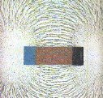
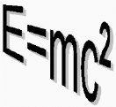

Version Date: June 2023
|
 |
This list of answers to frequently asked questions in physics was created by Scott Chase in 1992. Its purpose was to provide good answers to questions that had been discussed often in the sci.physics and related Internet news groups. The articles in this FAQ are based on those discussions and on information from good reference sources. They were later maintained and enlarged by Michael Weiss and Philip Gibbs. Others who have written for the FAQ are credited at the top of the items they submitted, while many more who have made smaller contributions have been thanked privately.
Most of the entries that you'll find here were written in the days when the Internet was brand new. But rather than showing their age, this means that they were written in a time when most contributions to the Internet came from authors who had a lot of knowledge of their subject. The same is no longer true of the modern-day Internet, where a vast number of authoritative-looking wiki-type pages are written by anyone who wants to, regardless of their knowledge.
So because of their age, the FAQ entries that you'll find here have a great deal of academic credibility—but they are not always perfect and complete. If you have corrections, updates or additional points to make, please send an email to the editor, (his CV is here). If you want to write an article on a frequently asked question in physics, feel free to suggest it to the editor.
This document is copyright. Please read the copyright notice for copyright details and archival information.
|
 2"> |
There are many other places where you may find answers to your question. Here is a list of other FAQs and answer archives that might be useful.
Thanks go to John Baez, Ronen Ben-Hai, Philip Gibbs, Chris Hillman, Chung-rui Kao, Matt McIrvin, Joe Mirando, Matthew Parry, Han-Tzong Su, Nathan Urban, Johan Wevers, Sam Wormley, and the various organisations for hosting us! If any other non-commercial sites would like to mirror this FAQ, please contact the editor.